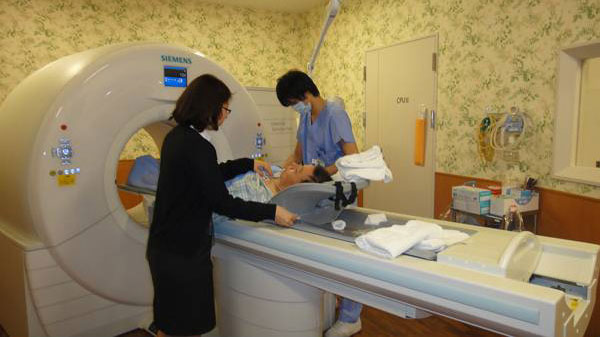

2008年9月6日开始，我两次心肌梗塞，一次病危，四次心血管介入造影手术，在三个主要心脏动脉处装了6个支架。整整两年后，我选择去日本看病，我的朋友张丽玲，告诉我日本神原纪念医院是日本最好的心脏病医院，堪称世界一流。这个医院拥有全球最顶尖的心脏病专家。
目前国内查看心血管状况最可靠的手段是心血管照影，就是切开胳膊或大腿上的动脉血管，然后注射造影剂，而后用一个金属丝进入血管，一直进入心血管部分，后在屏幕上观察心血管的状况，我看过自己的心血管CT，其清晰程度如黑白电影的影像。
心血管造影对患者来说是一个比较痛苦的事，切开动脉血管无论如何是很吓人的，但是张丽玲告诉我在神原医院做造影是用不着切开动脉血管的，这是驱使我去日本检察心脏的最重要的原因。
由于事先没有预约，我第一次去医院并没有能够实行造影观察，不过那一次医生原则上和我相约在今年2月前往。吸引我去日本看病的第二个原因，是日本医生对病人的耐心和责任感。给我看病的医生叫住吉，他在我第一次检察后，先是拿着一个可以拆装的心脏模型告诉我，我的心肌梗死是哪一块心肌，这块心肌在什么位置，目前的状况如何，那次犯病时心肌因缺氧而休克的，由于抢救及时，所以没有死亡，可以说又活过来了，只是它们没有像从前那样有活力了，变得迟钝懒惰，是被其他的肌肉带着动，这已经是最好的结果了。
他还说我们的心脏超声，观察了你心脏肌肉的67个部位，对每一个局部进行了评价，然后就说图片上是代表哪个级别的活力，让我看了一目了然，而后他又拿出一 个心脏的血管模型，从动脉到侧枝像一个树根，他告诉我的堵塞位置在哪里，我目前的支架位置在哪里。他一边讲解一边很抱歉的对我说：我是不是太罗嗦了，对不起，我是想让你尽可能详细地知道你的病情。那一次，我可以说是第一次清楚的知道自己的心脏是什么样子，第一次知道是哪里出了问题。
这次到日本是2月17日，去之前医院已经为我和同行的老乡做了一个详细的检查规划，在两天一夜的时间内，我们三人分别完成了七项检查，当然最重要的是我所说到的冠状动脉造影CT。
让我说几件琐碎的事。
一、不必切开的造影
医生告诉我们那台冠脉造影CT，在世界上只有三个，分别在美国、德国和日本。而设备的操作人员，据说培训时间一般都在5年以上，做CT之前，我们都以静脉注射的方式，注入了少量造影剂，而且还服用了控制血压和心率的药剂，以保持心态平和。我注意到那台机器上写着西门子的字样，可见是德国的产品。这项检查 前后约20分钟，我所做的只是几次吸气，停住，呼气。但第二天，当我看到CT的图片时，我真不敢相信自己的眼睛，最先医生让我看到的是一个清晰度极高的，360°的3D图片，我以为那是一个心脏的彩色模型，而医生告诉我这就是你的心脏。
接下来就更神奇了，切开这个心脏，他让你看到每一个心室在如何跳动，每一块在跳动中如何蠕动，每一根血管的粗细，再切开血管，你就清楚的看到血管内的支架 了，以及血液在多大的空间内流过了。这作为一种影像，应该比在国内切开动脉血管，相对模糊的黑白影像，清晰的多，也确切多了，它告诉你的所有信息，都是那么直观，从外到里，甚至比你自己手里攥着自己的心脏还要看的分明，真是“明明白白我的心”。
我的两个朋友，他们的收获应该比我大，朋友之一贺重，去之前，他已经自我确诊是一个糖尿病患者兼冠心病和颈动脉狭窄的患者。大约两三年里，和我说的大多是泄气的话，打退堂鼓的话，听说他的公司已基本处于歇业状态，而他出于人道立场，还给所有员工发着工资，这回医生告诉他：你的心脏非常好，你自己看看它跳的多么有力，糖尿病的药建议你停止服用了，贺重临回国时告诉我，他还要大干一番，重整旗鼓。
另一个朋友二虎，他的心脏病症状已经让他常常睡不着觉，我们离开神原医院后，二虎不管在车上还是在屋里，他只要一得空就会迷一觉，他说他解放了。他说日本医生的结论，让他不能不相信，不能不佩服，现在谁说他有心脏病，他自己都不信。原因很简单，他清清楚楚地看到了自己的心脏在如何工作，清清楚楚地看到每个心房，每一个血管，他相信自己的眼睛。
二、量血压
在国内医院，不知量了多少次血压，大体一样，只测量上肢一侧。而日本医院测量血压，则需要测量双上肢，双下肢的四个高低压读数，医生说上肢的左右血压差，下肢的左右血压差都有一个参数，特别是上下肢的差别更是一个重要的参数，这样量血压我在国内还没有体验过。
三、抽血
国内医院抽血做血液生化检验，抽完血后护士会给你一个棉签，说自己按压一会儿，就让你走了。而在日本的医院里，护士会在针口上压一个棉球，然后贴上一块宽大的胶布，让你自己按着，但5分钟之内不许离开，5分钟后护士揭开胶布确认针口没有问题，她会拿出一个25px见方的超小创可贴贴在针口上，这块小小的贴布直到我第二天离开医院还牢牢贴在针口那里。
四、服务
护理员到病房量血压测体温给药，一律是跪式服务，让你觉得比儿子女儿还贴心。
五、费用
医院绝不会让任何一个患者为做一项检查，去排队划价，排队付款，排队领药。医院的收费和饭馆一样，吃好了喝好了，要走的时候会有一个人恭恭敬敬地把你的账单拿来，跪在你面前请你过目，而且会让你大吃一惊，原来在日本比国内还便宜，我指的是同等条件和项目。
六、饮食
日本医院的餐食之精致，绝对可以和国内任何一家高等餐厅媲美。花样之多，营养之细致，让你惊讶。
七、大概是遇上日本正在推广中国观光，我一下飞机张丽玲就说，观光厅的长官希望请我吃饭，张丽玲已经以没有时间谢绝了，不过在整个看病过程中，日本经济产业省还是派出项目研究人员和专门的医疗翻译，跟踪全过程，大概他们是想积累一些经验。
八、日本人对中国刮目相看是肯定的，我在日本遇见一个从美国来的朋友，他是美籍华人，我们一起在商店买东西，他会让我们拿着护照去帮他退税，他说退税只退中国人，美国人没有这个优待，我说日本人那么仔细，中国人买了多少东西，美国人买了多少东西，日本人心知肚明。
九、我住过安贞医院，也住过阜外医院，这两个医院的门诊，人群完全可比王府井大街，不，比王府井大街还要拥挤若干倍。而在神原医院，你见不到那么多人，门诊或者住院的楼层都安静极了，据说所有的病人都是经过预约来的，而且都是免费的，这大概就是资本主义社会中的社会主义元素。